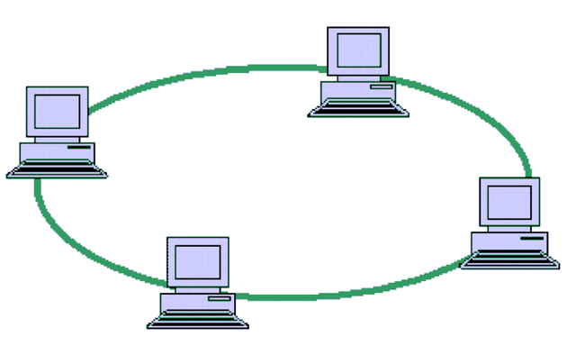
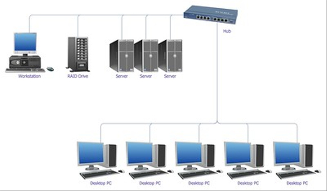
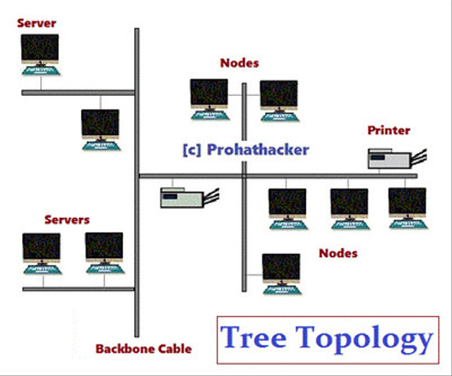
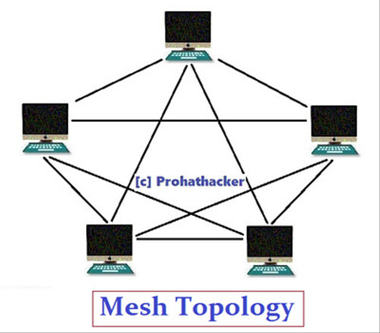
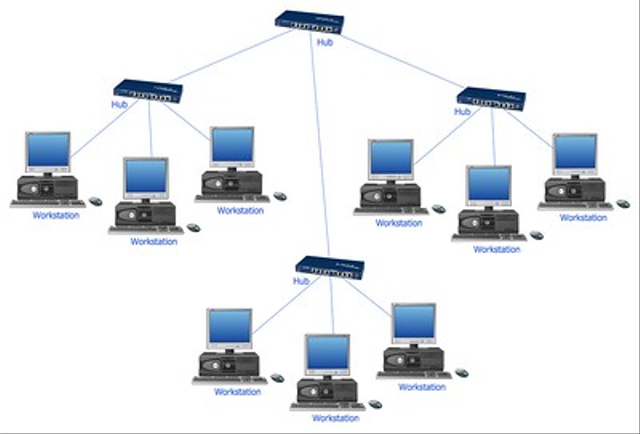

| HOME |
DAFTAR MATERI |
Topologi JaringanTopologi jaringan komputer adalah struktur dan cara semua komponen yang ada pada sebuah jaringan saling berhubungan satu sama lain. Mempunyai struktur atau topologi jaringan yang tertata dengan baik memang sangat penting untuk memastikan fungsionalitas, konektivitas, dan keamanan jaringan itu sendiri.
Macam - Macam Topologi Jaringan
1. Topologi RingTopologi yang digunakan dalam jaringan komputer ring atau cincin berbentuk melingkar. Seluruh komputer dihubungkan pada sebuah jaringan berbentuk cincin.
Cincin ini menjadi pusat berkumpulnya ujung kabel dari setiap komputer yang terhubung.
Topologi jenis ring merupakan sebuah media transisi yang menguntai dari terminal pertama ke terminal lainnya. Pada akhirnya, membentuk lingkaran. Jalur transmisi topologi ini hanya satu arah.
Kegagalan yang terjadi pada satu komputer di topologi ring bisa diatasi dengan menyalurkan data melalui jalur lainnya yang masih terhubung.
Namun,jika banyak data yang dikirim dalam satu waktu yang sama, pengiriman data menjadi lambat.

2. Topologi BusTopologi yang terdapat pada jaringan komputer jenis bus disebut dengan backbone. Topologi ini menggunakan kabel coaxial yang dibentangkan dan komputer terhubung pada kabel tersebut.
Sederhananya, terdapat satu kabel yang berfungsi sebagai media transmisi yang terbentang dari ujung ke ujung. Kedua ujung kabel tersebut ditutup dengan terminator yang biasanya memiliki ketahanan listrik 60 ohm.
Penggunaan topologi bus pada jaringan komputer memiliki biaya instalasi yang murah. Selain itu, kerusakan yang terjadi pada satu komputer tidak akan memengaruhi komunikasi pada komputer lainnya.
Jika kabel utama putus, maka seluruh komunikasi akan terputus. Topologi bus yang menggunakan kabel sangat panjang akan mempersulit proses pencarian penyebab gangguan.
Jika ada banyak komputer yang sedang mengirim pesan, kemungkinan bisa menyebabkan kecepatan komunikasi menjadi menurut dan lambat.

3. Topologi TreeTopologi jaringan tree merupakan pengembangan dari topologi jenis bus dan star. Pada topologi jaringan komputer, model tree dimulai dari sebuah titik yang disebut dengan headend.
Kabel dari headend akan ditarik menjadi cabang yang terhubung ke beberapa terminal yang berbentuk topologi bus.
Penggunaan topologi jaringan komputer tree akan menemui kesulitan saat mencari cara untuk menunjukkan ke mana data akan dikirim, karena memiliki banyak cabang.

4. Topologi MeshJenis topologi jaringan komputer mesh biasanya terbentuk akibat kurangnya perencanaan saat membangun sebuah jaringan, sehingga bentuk jaringannya tak beraturan.
Kegagalan komunikasi pada topologi ini sangat sulit untuk dideteksi. Bahkan, ada juga beberapa yang boros dalam pemakaian media transmisi. Tak heran, jika topologi jaringan komputer model mesh relatif mahal.
Tingkat kesulitan topologi jaringan komputer ini sebanding dengan jumlah komputer yang terpasang.

5. Topologi Star Topologi dan keamanan jaringan komputer model star menggunakan sebuah alat yang bernama concentrator. Alat ini dapat berupa hub atau switch yang menjadi pusat komputer dalam jaringan.
Pengelolaan jaringan ini lebih mudah. Apabila terjadi kesalahan dalam komunikasi, maka akan mudah dicari. Sebab, setiap komponennya langsung terhubung ke simpul pusat.
Kegagalan atau kesalahan pada salah satu komponen tidak akan memengaruhi komponen lainnya. Jika kegagalan terjadi di pusat kontrol, maka seluruh komunikasi akan terputus.
Semakin banyak komputer yang digunakan pada jaringan star, nantinya akan membuat komunikasi semakin lambat.

6. Topologi WLANTopologi nirkabel menggunakan Wireless Local Area Network yang hampir mirip dengan jaringan LAN. Namun, WLAN menggunakan wireless device sebagai penghubung jaringannya.
Topologi WLAN menggunakan dua mode, yaitu mode infastruktur dan mode Ad-Hoc.
Komunikasi yang terjadi pada mode infrastruktur harus melalui access point pada WLAN. Sedangkan untuk mode Ad-Hoc, komunikasinya terhubung langsung dengan masing-masing komputer.
|